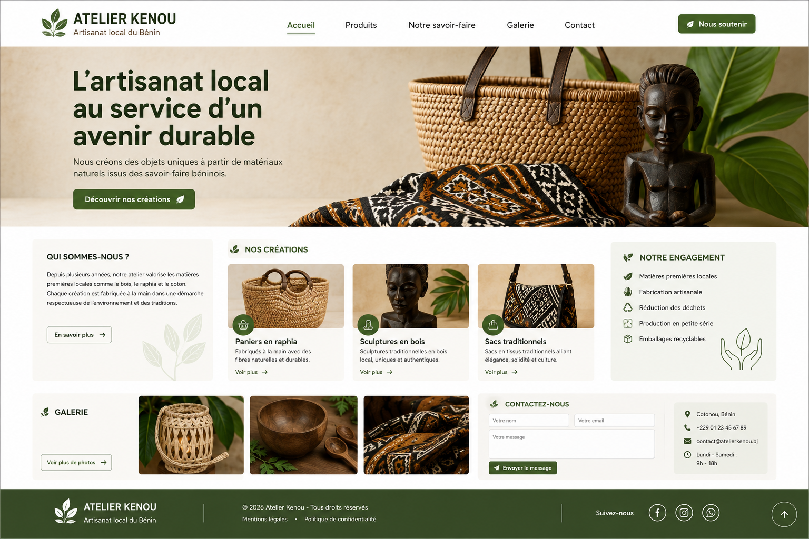
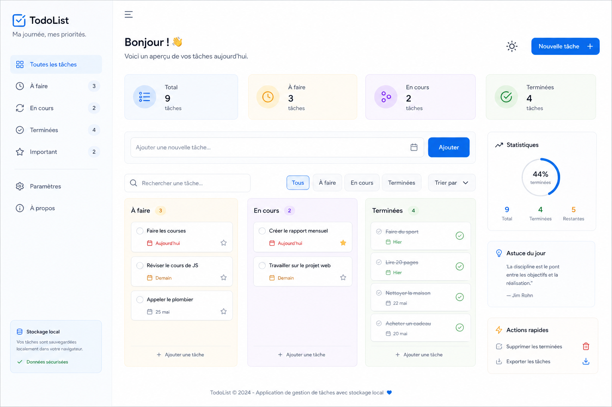
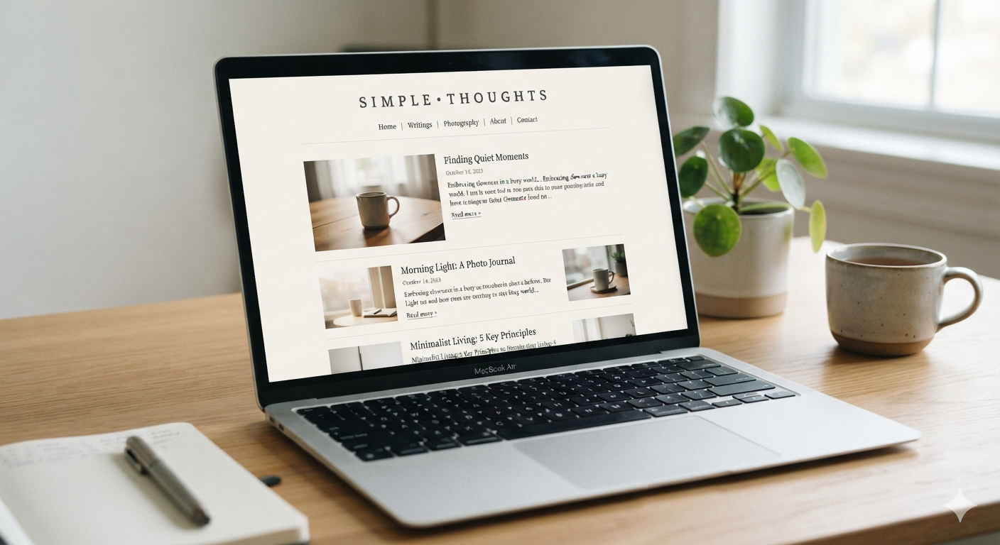

Mes Projets

Site vitrine éco-conçu
Site responsive pour artisan local. Score Lighthouse > 90.
HTML5 CSS3
To-Do List interactive
Application de gestion de tâches avec stockage local.
JavaScript
Dashboard météo
Interface dynamique consommant une API REST.
API REST
Blog minimaliste
Blog statique avec design épuré et typographie soignée.
HTML5 CSS3Calculateur de budget
Outil de suivi des dépenses avec graphiques.
JavaScript
Portfolio personnel
Ce portfolio responsive et éco-conçu.
HTML5 CSS3 JS